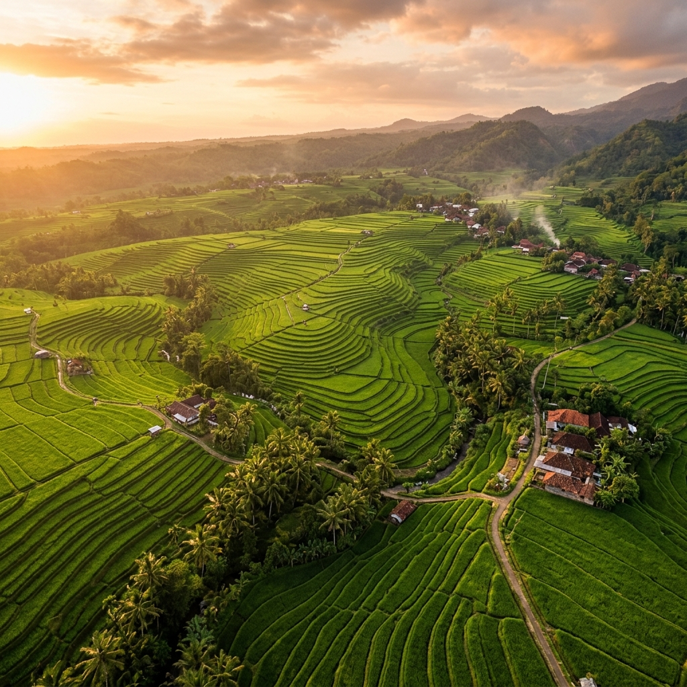

Mengungkap pola spasial ketahanan pangan 38 Kabupaten/Kota di Jawa Timur melalui K-Means Clustering, Moran's I, dan analisis LISA berbasis data BPS.
Jawa Timur • 2021–2025
Statistik agregat, distribusi IKP per tahun, dan komposisi klaster di seluruh wilayah.
→ Lihat OverviewChoropleth IKP interaktif dengan slider tahun dan hasil uji autokorelasi spasial Moran's I.
→ Lihat Peta IKPPersebaran 3 klaster K-Means dengan analisis LISA untuk identifikasi hotspot lokal.
→ Lihat Peta ClusterEksplorasi detail per wilayah dengan filter tahun dan perbandingan antar kabupaten/kota.
→ Lihat ProfilProyek ini merupakan tugas akhir mata kuliah Statistika Ofisial yang menganalisis dimensi ketahanan pangan di Jawa Timur secara komprehensif. Dengan mengintegrasikan data pertanian, sosial-ekonomi, dan kesehatan dari BPS selama 5 tahun, kami membangun model klasterisasi dan analisis spasial untuk mengidentifikasi pola distribusi ketahanan pangan antar wilayah.
Statistik agregat, distribusi IKP, dan komposisi klaster seluruh wilayah.
| Cluster | IKP | IPM | Kemiskinan (%) | TPT (%) | Gizi Kurang (%) | Produksi Padi (ton) | Karakteristik |
|---|
H0: Tidak terdapat autokorelasi spasial (pola distribusi IKP bersifat acak)
H1: Terdapat autokorelasi spasial (wilayah berdekatan memiliki nilai IKP serupa)
Bobot Spasial: Queen Contiguity